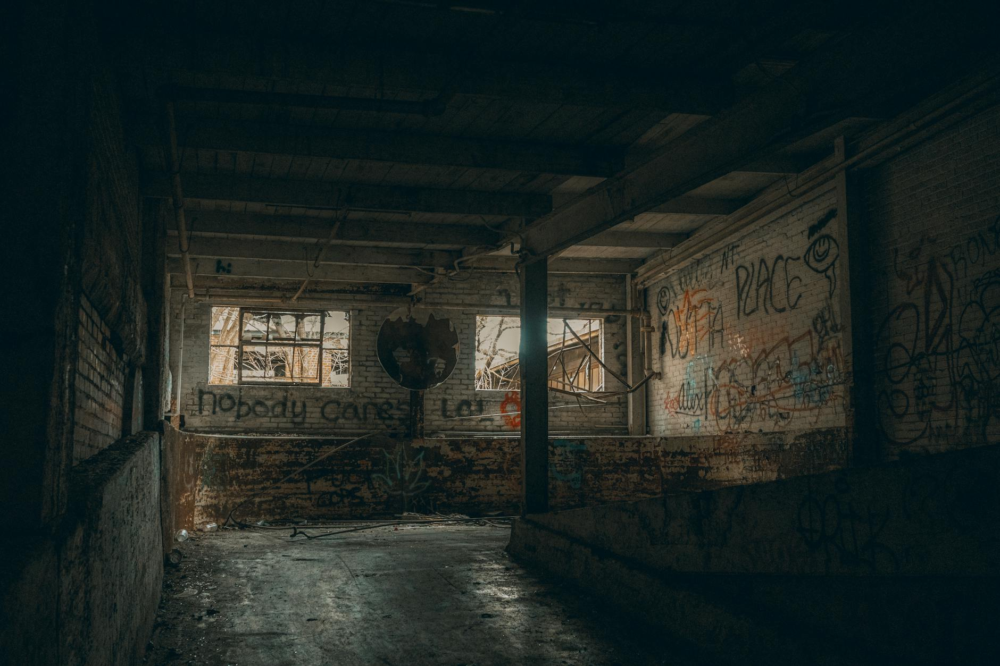

1. "evil detector" 没响那天
5 月 4 日周一，Oakland 法庭。马斯克起诉 OpenAI 的庭审第一周。
OpenAI 律师把马斯克 4 月 25 日发给 Greg Brockman 的两条短信读出来：第一条试探性提议和解，第二条在收到 Brockman"双方一起撤诉"的回复之后，丢下一句——
"By the end of this week, you and Sam will be the most hated men in America. If you insist, so it will be."
翻译：你和 Sam 这周结束就是全美国最被恨的两个男人，你们要敬酒不吃，那就吃罚酒（笑）。
OpenAI 在法庭上说，这叫"以恐吓代替和解"。这条短信没让陪审团看见，但落在了公开案卷里。
5 月 6 日周三，San Francisco，Anthropic 的 Code with Claude 开发者大会。
舞台上 Anthropic 自己宣布：拿下 SpaceX 的 Colossus 1 全部算力，>300 兆瓦、>22 万张 Nvidia GPU（H100、H200、GB200 都有），月内上线，给 Claude Pro / Max 当推理后端。
同一天，马斯克自己在 X 上发——
"No one set off my evil detector. Everyone I met was highly competent and cared a great deal about doing the right thing... So long as they engage in critical self-examination, Claude will probably be good."
翻译：没人触发我的"邪恶检测器"，他们的人都很能干、都很关心做对的事；只要他们能自我批评，Claude 大概率是好的。
三个月前，他还在 X 上骂 Anthropic 是"邪恶的、反人类的、憎恨西方文明的公司"——这句原话 Fortune 直接把存档抄给你看了。
一边在法庭上把 Brockman 描述成出卖人类初心的人，一边给 OpenAI 的最大对手送 22 万张 GPU。一边骂 Anthropic 邪恶，一边说 evil detector 没响。
如果你看完只看出"马斯克言行不一"，那就太亏了。马斯克言行不一是空气，是水，是基础物理常数。这次的看点不是他说了什么，是他这一周必须做什么。

2. xAI 静悄悄地死了
很多媒体把 5 月 6 日描述成"马斯克解散 xAI"。这个说法晚了三个月。
xAI 真正的死亡发生在 2 月——SpaceX 用 1.25 万亿美元的全股票交易，把 xAI 整体收编。从那天起，xAI 不再是一家独立的 AI 公司，它成了 SpaceX 的一个事业部。
5 月 6 日发生的事情不是"解散"，是"整理后事"——把"独立 AI 公司"这块招牌从墙上摘下来，把训练负载从 Colossus 1 迁到新建的 Colossus 2（2 GW），把空出来的旧机房挂出去出租。
这个动作背后藏着一个非常具体的指标：xAI 自己的训练已经不在 Colossus 1 上跑了。
如果 xAI 还在赛道上认真打牌，Colossus 1 这种"全行业最大单体"的资产，怎么可能整租给对手？只有一种情况会让这件事发生：xAI 自己用不上这么多算力了。
可能因为它没有那么多钱继续买 GPU 续命，可能因为 Grok 撑不起这种规模的商业故事，可能因为它需要换个身份继续活下去——不管是哪种，结论都一样：xAI 作为"独立 AI 公司"已经讲不通了。
先看几个具体数据。xAI 在 2024 年的最后一轮融资估值 200 亿美元，这 200 亿背后是"我们也是头部 AI 公司"的故事。但 5 月开庭这一周，马斯克自己在庭审里承认——
"We're not currently tracking to reach AGI first."
翻译：我们目前不在最先做出 AGI 的赛道上。
更狠的是，他承认 xAI 模型是用 OpenAI 模型蒸馏出来的（MIT Technology Review 写得很清楚）。一家用对手模型蒸馏的公司，在公开法庭上承认自己不在 AGI 第一梯队，估值 200 亿——这个"独立 AI 公司"的身份还能挂多久？
挂不住。
所以 SpaceX 在 2 月就把 xAI 接走了——表面上叫合并，账本上叫收尸。5 月 6 日的"宣布解散"只是把这件事走个公开手续，告诉投资人：那部分价值现在挂在 SpaceX 的肩膀上了，请你们重新算。
把这个时间线拉直来看：
- 2026/02：xAI 以 1.25 万亿换股并入 SpaceX
- 2026/04/01：SpaceX 秘密提交 S-1，估值目标 1.75 万亿美元
- 2026/04/25：马斯克给 Brockman 发"全美最恨"短信
- 2026/05/04：起诉 OpenAI 的庭审在 Oakland 开庭
- 2026/05/06：摘下 xAI 招牌，Colossus 1 整租给 Anthropic
- 2026/06/08：SpaceX 正式启动路演
3. 一份招股书，缺一个 AI 客户
但真正决定这一周节奏的不是法庭，是招股书。
SpaceX 4 月 1 日提交的 S-1 里，估值目标 1.75 万亿美元，Bloomberg 第二天爆料说后续抬到 2 万亿；募资规模高达 750 亿，21 家承销商打头阵——摩根士丹利、美银、花旗、摩根大通、高盛全在表里。这是美国历史上潜在最大单笔 IPO。
1.75 万亿这个估值是怎么算出来的？大体上靠三个故事撑：
- Starlink：现成商业模式，订阅模式跑通，规模化复制中
- Starship：火星叙事 + 卫星发射成本曲线
- AI 算力：吸收 xAI 后的 Colossus / 训练业务
xAI 自己用 Colossus 不算，那是左口袋付右口袋。Grok 在用户量和品牌认知上跟 Claude / ChatGPT 不在同一个量级。要让"AI 算力业务"在 1.75 万亿的估值里站得住，必须有一家大牌外部客户在用 Colossus，而且这家客户的名字要能印在 IR 材料的 PPT 第一页上。
Anthropic 就是那个客户。
Fortune 引用分析师的数字：这单合同对 SpaceX 大约值 4 亿美元年度收入。4 亿对 1.75 万亿是九牛一毛——0.023%。SpaceX 不是在卖 4 亿美元的算力，是在卖"我们家有 Anthropic 这种客户"这件事，挂在 IPO 招股书第一页。
回头看那条"evil detector"的推文，再回头看三个月前他骂 Anthropic"邪恶反人类"的截图——你会发现这条夸赞 Anthropic 的推文不是顿悟，是 IR 暖场词。是 4 月 1 日 S-1 提交之后必须做的"客户站台"动作。
如果时间线再往前推一格，2 月份的 xAI 并入 SpaceX，本质上是把 xAI 那 200 亿估值"折"进 SpaceX 的 1.75 万亿。一家独立 AI 公司，融资估值要爬到 200 亿需要经过多轮博弈、烧钱、技术兑现。但放进 SpaceX 的资产负债表里，它只占 1.1% 的故事——只要 SpaceX 整体 1.75 万亿能定下来，这 200 亿是顺手赠送的。
更划算的事还有：xAI 烧不动的算力账单可以摊到 SpaceX 整体业务里，变成"AI 业务投入"；xAI 烧不出来的商业故事可以替换成"我们租给 Anthropic"。一份招股书的财务叙述，从"xAI 还在亏钱训练 Grok"，转身变成了"SpaceX 是 Anthropic 的算力底座"。
所以 5 月 6 日不是反转。它是个标准的资本市场动作：把不赚钱的资产（自家训练）腾出来给赚钱的资产（租给对手），让财报漂亮，让 IPO 故事完整，让承销商在路演里有具名客户可以介绍。
从这个角度看，"evil detector 没响"那条推文，跟 IR 部门提前三个月写好的 talking point 没什么差别。差别只是它发在了马斯克的私人账号上，所以读起来像顿悟，不像通稿。
4. 缺氧的 Anthropic 与缺时间的 SpaceX
那么 Anthropic 这边呢？也别浪漫化。
把 Anthropic 过去六个月签的算力合同摆出来：
- AWS：100 亿美元投资 + Anthropic 承诺 10 年内向 AWS 花费超过 1000 亿美元采购算力，最高 5 GW 容量
- Google + Broadcom：5 GW 容量（用 TPU），2027 年起陆续上线
- Microsoft + NVIDIA：300 亿美元 Azure 算力 + 战略合作
- Fluidstack：500 亿美元美国 AI 基础设施承诺
- SpaceX：300 兆瓦 Colossus 1，月内交付
算力承诺 2500 亿+，自己拿到的钱 480 亿。差距 2000 亿，怎么填？要么用未来的收入填，要么靠这些云厂商把钱"再借"一遍——投资 → 你买它算力 → 它的财报数字回流。我们之前写过这个循环交易，这里不重复。
只问一个问题：Anthropic 都签了 AWS 5 GW、Google 5 GW、微软 300 亿、Fluidstack 500 亿，为什么还要再签 SpaceX 300 兆瓦？300 兆瓦在 5 GW × 2 = 10 GW 的盘子里，是个 3% 的小数。答案藏在交付时间里——
- AWS 的"近 1 GW 新增容量"承诺要到 2026 年底
- Google + Broadcom 的 5 GW 要到 2027 年起才陆续上线
- Microsoft / NVIDIA 的 300 亿是战略合作，没有具体交付时间窗口
- SpaceX 的 300 兆瓦——月内
Anthropic 在 Q2 2026 显然有一个不能等到 2027 的算力缺口。他们 5 月 6 日的官方公告里配了一组动作，把这个缺口的存在直接坐实——
Claude Code 五小时配额翻倍，Pro / Max 高峰时段限制取消，API 第一档输入 token 上限+1500%、输出+900%，Opus 模型的 API 速率被"显著"上调。
这种数字翻倍不是平时做的，是憋了几个月的需求一次释放。意思是：之前 Claude 用户的限额低，是因为算力跟不上；现在算力突然多了 22 万张 GPU，立刻拆限。
所以"对方是不是邪恶"在 Q2 真的不重要。重要的是哪家公司有现成的 22 万张 GPU 能在 30 天内挂上去给 Claude 跑推理。
这不是浪漫的"商业凌驾意识形态"。这是缺氧时谁递氧气面罩你都会感谢的物理学。
如果你要替 Anthropic 找一个体面的解释，叫 multi-cloud 战略，叫风险分散——但 multi-cloud 不解释为什么交付窗口都集中在 Q2，而其他人都在 Q4 或者 2027。这个 emergency-fill 的特征非常明显：你不会平时就跟一个曾经被自己阵营骂"邪恶"的供应商谈，你只会在被逼到墙角的时候去敲那扇门。
至于 Musk 这一边：他不会平时就把世界最大单体数据中心整租给"邪恶"公司，他只会在 IPO 路演倒计时 32 天的时候，把这扇门主动敲开让对手进来。
两边都饿，所以两边都不挑食。
放到这个框架里再回头看那条 X 推文——"No one set off my evil detector"——它就不是马斯克性格突然变好。它是两个时间表撞在了一起：Anthropic 缺氧的时间表，SpaceX 缺客户的时间表。两个时间表在 5 月 6 日同一天对齐，于是 evil detector 就不响了。
如果哪天 Anthropic 算力够用了，或者 SpaceX 上市完成、估值兑现了——大概率某一方的 evil detector 会重新响起来。等着看。
5. 以后看 AI 圈"突然合作"，先翻这一页
把这一周的事情拉远一点看：
法庭这边——OpenAI 律师把马斯克的"全美最恨"短信摆出来，给法官看那不是和解是恐吓。庭审本身大概率不会让马斯克赢得他想要的（拆解 OpenAI 的 for-profit 结构），但这场庭审作为媒体事件已经赢了：马斯克在 IPO 路演前 4 周霸屏所有 AI 头条，所有关于"为人类做 AI"、关于初心、关于谁更道德的话题，都被拉到他的舞台上演。
数据中心这边——SpaceX 的 Colossus 1 出租给 Anthropic，让 SpaceX 招股书里的 AI 算力业务有了第一个能写在 PPT 第一页的外部客户。
xAI 这边——独立 AI 公司的招牌摘下来，并入 SpaceX，带着曾经的 200 亿估值故事，藏进 1.75 万亿的母体里。
太空这边——还有那个"orbital data centers"的承诺，多个 GW 的太空算力。这玩意儿距离工程实现遥远到几乎可以当作纯 IR 修辞。但投资人不是傻——他们也想要这种 buzzword 印在路演 PPT 上，火星卫星太空算力和 AI 是一套连起来卖的故事。
这些事情同步发生不是巧合，是同一张 cap 表上不同列的对应分录。下次再看到 AI 公司"突然合作"，先做两件事——
第一件：查一下双方过去 6 个月的现金流和融资节奏。谁在等下一轮估值，谁的 IPO 路演定档下个月，谁刚被监管或客户摁了一下，谁的算力配额刚被骂上热搜。
第二件：看交付时间窗口和合同金额相对于双方估值的比例。0.023% 的合同金额配上"月内交付"的窗口、配上对方 IPO 倒计时——这不叫浪漫故事，这叫 IR 操作。
意识形态在 AI 这个行业里永远会被拿出来说一说，但它不是底层货币。底层货币是算力交付速度、IPO 路演时间、估值故事完整性。每一次"敌我"叙事的反转，背后都有一张 spreadsheet 在偷偷重新算账。
回到最开始那句反差：起诉 OpenAI 的同一周，给 OpenAI 最大对手送 22 万张 GPU。
不是反转。
是 xAI 死了，SpaceX 急着上市，Anthropic 缺氧——所有人对着同一张时间表，演了一场看似离谱、实则机械的多人配合。
马斯克不是和 Anthropic 和好了。他没那么多情绪。他是和上市时间表和好了。
就这。